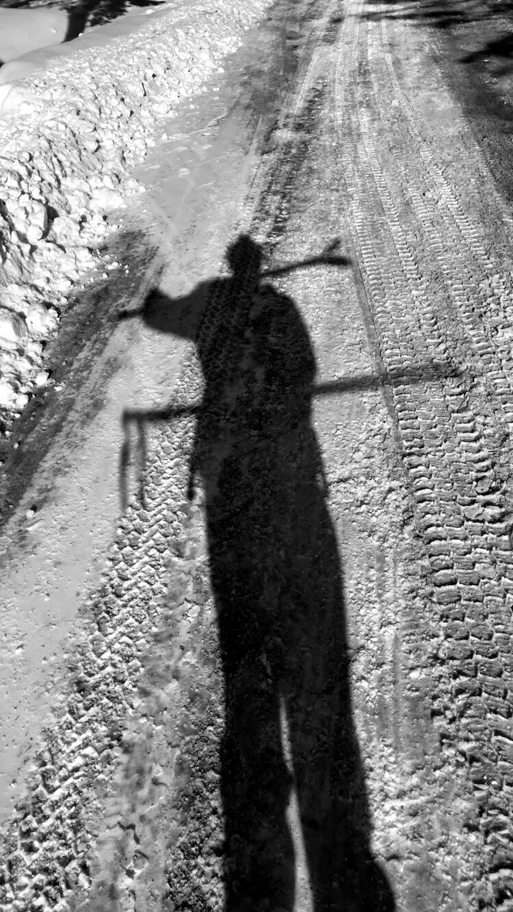

 I was born in the state of Pennsylvania on November, 3rd 1997. Shortly after I was born my parents graduated from college we moved to New York. I have moved many times in my childhood around the same general part of upstate New York. As a child I loved the outdoors and most of my days were spent being outside where I could adventure and explore to no limit.